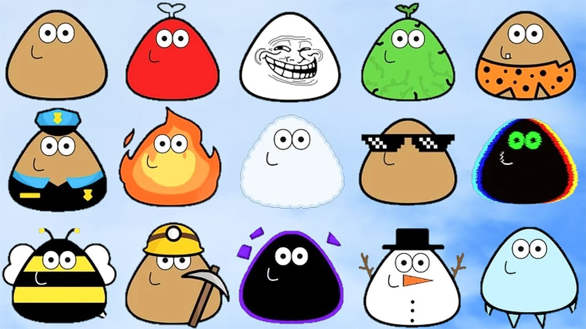
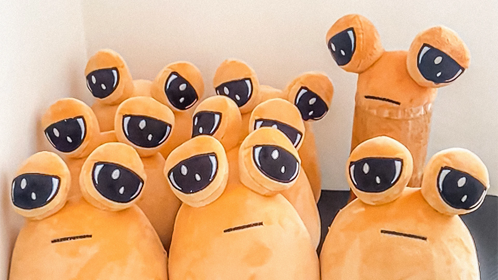
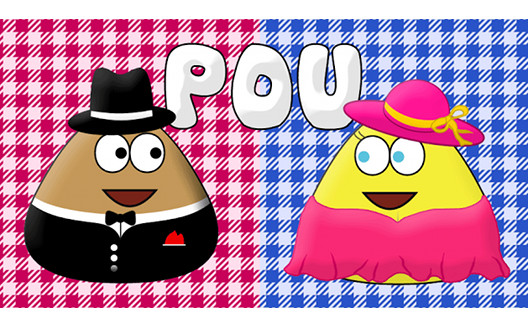

Play Pou Online – Your Favorite Virtual Pet Game in Your Browser
If you love virtual pet games, Pou is the perfect online game for you. In this browser version, you can experience the joy of taking care of your very own Pou without the need to download an app. This online Pou game will let you feed, bathe, and play with your adorable alien pet, all from the convenience of your web browser. Let's dive into everything you need to know about Pou, including its history, gameplay strategies, and tips to ensure your Pou stays happy and healthy.
What is Pou?
This is a unique virtual pet game where players take care of a cute, blob-like alien creature. Originally released as a mobile game, Pou has become a favorite for players worldwide due to its simple yet engaging gameplay. In this game, players can interact with their Pou by feeding, cleaning, dressing, and playing mini-games with it. The more you care for your Pou, the more customizable options and features you unlock.
The History of Pou
Origins of Pou
The game was first released in 2012 by Paul Salameh, a Lebanese developer who aimed to create a game similar to the classic Tamagotchi. The game quickly gained popularity due to its accessible nature and the appeal of caring for a virtual pet. Over the years, Pou became a household name among mobile gamers, offering hours of fun with simple gameplay mechanics.
Pou's Rise to Popularity
Since its release, This game has been downloaded millions of times across Android and iOS devices. The game's addictive charm lies in its wide range of activities, including feeding your Pou, playing games to keep it entertained, and customizing its appearance. The browser version of Pou brings the same engaging experience to a whole new audience, allowing even more players to enjoy this delightful game without the need for any installation.
The Evolution of Pou
Over time, This game has evolved from a basic virtual pet game into a rich and diverse experience, filled with mini-games and customization options. The introduction of an online version ensures that players can now easily access the game through their web browsers, allowing them to care for their Pou anytime and anywhere. As Pou continues to evolve, its community of dedicated fans keeps growing, making it one of the most enduring virtual pet games.

How to Play Pou
Getting Started
To play this game, simply open the game in your web browser. Once the game loads, you'll be introduced to your very own Pou. Your goal is to take care of this alien pet by meeting its needs, including feeding it, cleaning it, and making sure it gets enough rest.
- Feeding Pou: Keep your pet full and happy by feeding it different types of food. You can purchase food items from the in-game shop using coins earned by playing mini-games.
- Cleaning Pou: Your pet will get dirty over time, and it's your job to keep it clean. Use soap and water to wash your Pou and make sure it stays fresh and healthy.
- Playing with Pou: Your pet loves to play! Engage in various mini-games that not only keep your Pou entertained but also help you earn coins to buy food and accessories.
Advanced Strategies for Pou Care
Once you've mastered the basics, here are a few advanced tips to ensure your Pou thrives:
- Energy Management: Your pet gets tired after playing. Make sure you put your Pou to sleep to regain energy. Don't let it get too tired, as this will affect its mood.
- Mini-Games: The mini-games in pet are not just for fun; they are a great way to earn extra coins. The more coins you collect, the more you can buy for your Pou, including costumes, food, and room decorations.
- Customization: As you progress, you can unlock a wide range of customization options. Change your Pou's appearance, outfits, and even the wallpaper of its home. These features make Pou more personal and enjoyable.
Tips for Earning Coins in Pou
Coins are the currency of the Pou universe, and you'll need them to buy food, potions, and decorations. Here are some of the best ways to earn coins in the online Pou game:
- Play Mini-Games: Mini-games are the fastest way to earn coins. Popular games include the Pou soccer challenge and the flying game, where you guide your Pou through obstacles.
- Daily Rewards: Be sure to log in daily to collect free rewards and coins that can help you keep your pet happy and well-fed.
- Complete Achievements: The game offers various achievements for taking care of your Pou. Completing these tasks will reward you with extra coins.
Why Play Pou Online?
Accessibility
Playing this game online eliminates the need for downloads or updates. You can simply open your browser and start playing right away. This makes it easier for new players to try the game without committing to an app.
A Classic Game with New Features
The browser version of Pou retains all the fun of the original mobile game, but with enhanced accessibility. The gameplay is straightforward, making it enjoyable for both new and returning players. Whether you want to relax by caring for your Pou or take on the challenges of mini-games, the online version of Pou has it all.
Free to Play
One of the best features of this game online game is that it's completely free to play. You can experience the joy of raising a Pou without any cost, making it an ideal choice for those looking for a fun and budget-friendly game.
Conclusion
In conclusion, This game remains a beloved virtual pet game, and now it's available online for everyone to enjoy. Whether you're new to the world of Pou or a long-time fan, this online version brings the charm and excitement of Pou to your web browser. Take care of your Pou, play mini-games, and explore the many customization options as you create your perfect pet. Start playing Pou online today and discover why millions of players around the world love this cute and entertaining game!
